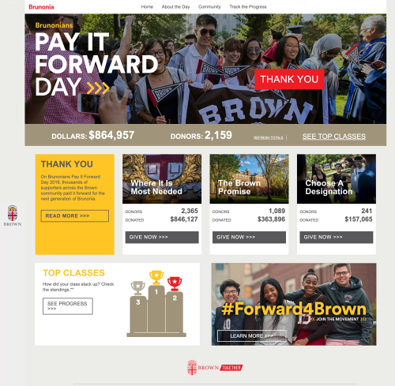
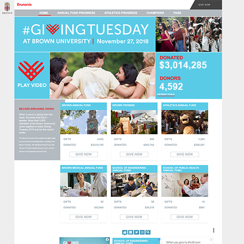
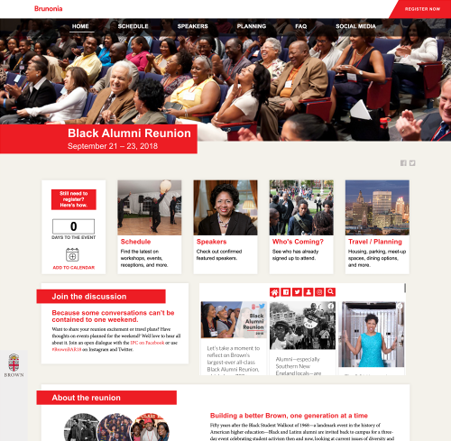
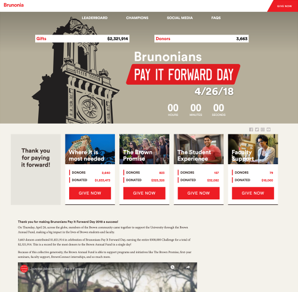
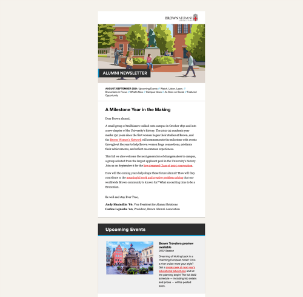

Older Work
Websites
Giving Tuesday 2019

The previous Giving Tuesday initiative supported both Brown Bears Sports and the immediate-use resource of The Brown Fund. This year, we developed a sleek new look for focusing just on The Brown Fund. However, its pages still included a countdown, social integration, and real-time charts to engage donors worldwide. The site hosted 4,888 visitors, who on average spent 2 minutes there. Giving Tuesday 2019 raised over $3.7 million dollars from 4,706 donors.
How I made it happen:
- Interpreted flat designs from the graphics team for a variety of screen sizes
- Developed the site locally in mobile-first, semantic HTML5 and Sass
- Evaluated the style guide for accessibility with color contrast
- Loaded different parts of the code into the content management system, mindful of user access and reusability
- Created a different layout for each page, each with its own mobile behavior
- Ran a testing regimen on a variety of devices
- Managed the project to ensure various deliverables from different teams arrived in a timely fashion
- Iterated on internal and external feedback from critiques
- Integrated real-time results charts and social sharing
- Launched the before state early, and managed the on-the-dot switchover for giving day go-live
- Completed the site by activating the day after state
Bruno Gives Back Day 2019

Bruno Gives Back Day was developed as a dedicated giving day just for the Sports Foundation, separate from Giving Tuesday. Though sharing similarities, this site was a single page that needed to gracefully load and display real-time totals for nearly 30 individual sports teams. We also added top 5 rankings by both donors and dollars new for this day, as well as a brand-new, dynamic design. 4,538 supporters came out to root for their favorite teams on this first-ever giving day just for Brown Bears teams, making it a success from the get-go.
How I made it happen:
- Interpreted flat designs from the graphics team for a variety of screen sizes
- Coded semantic HTML5 and Sass, creating the mobile-first site locally first
- Segmented and loaded into our content management system (BBIS)
- Created graceful flowing positioning for both new top 5 charts and all team tiles
- Ran a testing regimen on a variety of devices
- Iterated closely with the Sports Foundation team to produce and receive all deliverables before they're needed, including written content and plugins
- Integrated internal and external feedback from critiques
- Connected and assessed real-time charts
- Executed a multi-state launch process with before, during, and after presentations of the site
Brunonians Pay It Forward Day 2019

To enhance competition amongst alumni classes, we developed a top 3 classes chart that flows seamlessly on different-sized screens. The multiple pages of the site included fundraising tools, stories on those in the Brown community paying it forward, and social integration. Each page follows a different mobile-first layout and unique banner. Brunonians Pay It Forward Day 2019 raised $864,957 from 2,159 donors. 4,660 users visited the site.
How I made it happen:
- Interpreted flat designs from the graphics team for a variety of screen sizes
- Developed the site locally in mobile-first, semantic HTML5 and Sass
- Evaluated the style guide for accessibility with color contrast
- Loaded different parts of the code into the content management system, mindful of user access and reusability
- Ran a testing regimen on a variety of devices
- Managed the project to ensure various deliverables from different teams arrived in a timely fashion
- Integrated internal and external feedback from critiques
- Connected and assessed real-time charts
- Built, managed, and maintained multiple pages of content in differently flowing layouts
- Executed a multi-state launch process with before, during, and after presentations of the site
Giving Tuesday 2018

Rounding out 2018, Brown started fundraising for Giving Tuesday, the Tuesday after Thanksgiving. Adding a second annual giving day was a large endeavor. Similar to Brunonians Pay It Forward Day, I managed, maintained, built, tested, and coded this site from scratch. It’s mobile-first, fluid, and incorporates fundraising goals for both The Brown Fund and Brown Bears Sports. Giving Tuesday 2018 raised over $3 million for the university from 4,592 donors. 2,767 users visited the site and stayed for an average of nearly 6 minutes.
How I made it happen:
- Interpreted flat designs from the graphics team for a variety of screen sizes
- Developed the site locally in mobile-first, semantic HTML5 and Sass
- Evaluated the style guide for accessibility with color contrast
- Loaded different parts of the code into the content management system, mindful of user access and reusability
- Developed a pixel-perfect scalable top banner, where different content would be swapped out periodically
- Created a different layout for each page, each with its own mobile behavior
- Ran a testing regimen on a variety of devices
- Managed the project to ensure various deliverables from different teams arrived in a timely fashion
- Iterated on internal and external feedback from critiques
- Integrated real-time results charts and social sharing
- Launched the before state early, and managed the on-the-dot switchover for giving day go-live
- Completed the site by activating the day after state
Black Alumni Reunion

Hot on the heels of my first microsite, I was tasked with creating a multi-page site for a major university event. The Black Alumni Reunion commemorated the 50th anniversary of the Black Student Walkout, a historic event at the university, where Black students left class to protest the disproportionately small Black community and the few resources for those Black students that were there. This multi-page site was built, tested, and managed by me, with some design input as well. It included a countdown, social media feed, event download, and served as the main information source for the event and all its details over the weekend. Participants wrote in to tell us how much they enjoyed this gathering with their classmates and how significant it was for them. A few of the students who originally walked out 50 years ago also attended. The site logged 562 users and view times averaged 5 minutes. 700 people attended the event.
How I made it happen:
- Interpreted flat designs from the graphics team for a variety of screen sizes
- Coded semantic HTML5 and Sass, creating the mobile-first site locally first
- Segmented and loaded into our content management system (BBIS)
- Created, laid out, and maintained multiple pages of event details down to individual workshops, hotel information, and speaker information
- Ran a testing regimen on a variety of devices
- Integrated internal and external feedback from critiques
- Met an aggressive deadline to have the site live only a month after Pay It Forward Day, while balancing multiple other projects
Brunonians Pay It Forward Day 2018

Brown Advancement has fundraised for Brunonians Pay It Forward Day for years, but 2018 was the first time we received a request for a website. With my predecessor switching to a new position, I took the initiative to learn our new content management system (BBIS), intimately, and built out the site locally, then parsed it into Layouts, Templates, Pages, and Parts in the system, pulling everything back together. Working off of a design file, I built the site myself from soup to nuts, the first in what became a long string of giving day sites. Volunteers, alumni, staff, and donors all came to rely on the site as a way to get real-time updates on the day via integrated charts as well as information on its importance. The giving day raised $2.3 million from 3,663 donors.
- Interpreted flat designs from the graphics team for a variety of screen sizes
- Coded semantic HTML5 and Sass, creating the mobile-first site locally first
- Segmented and loaded into our content management system (BBIS), learning the intricacies of the platforms layouts, templates, pages, and parts on the fly
- Ran a testing regimen on a variety of devices
- Managed the project to ensure various deliverables from different teams arrived in a timely fashion
- Integrated internal and external feedback from critiques
- Connected and assessed real-time charts
- Added a countdown, social integration, and videos
- Executed a multi-state launch process with before, during, and after presentations of the site
- Did it all, for the first time, by myself, becoming the subject matter expert of this tool at Brown
Brunonia Navigation Mockup

A UI/UX project, I was asked to mock up some navigational changes in Photoshop for the Brunonia site (see below). These updates are in the top login area and the sidebar.
Emails
Campaign Impact Newsletter

With partnership across teams, I designed, tested, and continue to send this quarterly update about progress for the university's current campaign. The BrownTogether Campaign is our major source of fundraising and helps fuel many aspects of university life, including research and scholarships. This newsletter often raises thousands of dollars for the university.
Alumni Newsletter

Working with partners in Alumni Relations and Content and Strategy, I designed, revised, tested, and ultimately launched and sent this newsletter. Brown's alumni body is around 90,000 people, and this newsletter keeps them all in touch with happenings at the university.